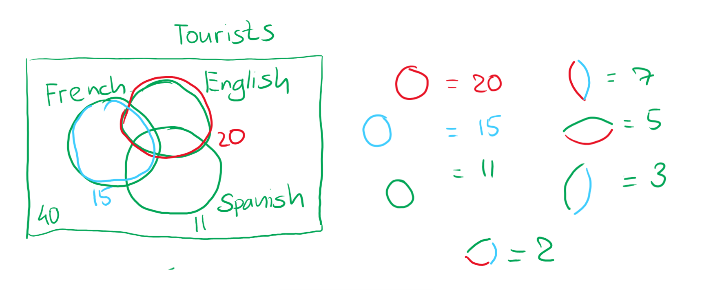

There are 40 tourists in the group. Out of them, 20 know English, 15 know French, and 11 know Spanish. 7 people know both English and French, 5 people know both English and Spanish, and 3 people know both French and Spanish. 2 tourists know all three languages. How many people in the group know neither of these languages?
Draw a visual aid picture:

Define each sector from the problem statement accordingly:
∣T∣=40
∣E∣=20
∣F∣=15
∣S∣=11
∣E∩F∣=7
∣E∩S∣=5
∣F∩S∣=3
∣E∩F∩S∣=2
We need to find ∣T∣−∣E∪F∪S∣. Therefore, using the exclusion-inclusion formula:
Given 3 carnations, 4 roses, and 5 tulips. How many ways are there to create a bouquet out of 7 flowers, using the existing flowers? (flowers of the same kind are considered the same)
Consider 4 possible groups: (0, 1, 2, or 3 carnations in the bouquet). How many possibilities are there to create a bouquet of 7 flowers?
Arrange the flowers in the first group:
R1R2R3R4T5T6T7T8T9
How many possible ways to choose a slice of this arrangement of length 7 are there? In other words, how many possibilies are there to place two separators so that there would be 7 items between them? In total, the answer would the number of roses and tulips minus the length of the slice plus 1: (4+5)−7+1=3
Similarly, now consider the number of such slices in the following sets:
R1R2R3R4C5T6T7TTT⇒4
R1R2R3R4C5C6T7TTTT⇒5
R1R2R3R4C5C6C7TTTTT⇒6
Sum all the possible slice beginnings: 3+4+5+6=18. Is this the final answer? No, because the following slice:
C1C2T3T4T5T6T7
is accounted twice.
Therefore, the final answer is 18−1=17.
Answer: 17
Problem 3
How many binary words of length 12 have the subword 1100?
Let's calculate the number of words that do not have the subword 1100.
Using a recursive approach, calculate the number of words of length n, starting from n=1. It is obvious that no words of length ≤3 have the required subword, so f(0),f(1),f(2),f(3)=2n:
input value
result
f(0)
1
f(1)
2
f(2)
4
f(3)
8
Further, for values greater than 3, let's consider how the words are derived from the previous iteration. From the possible words of length 3, there would be a single option to get 1100 through machinations, adding 0 to the word 110. For words of length 4, there would be two options to get a word that corresponds to the pattern ∗1100, either from 0110 or from 1110, and so on. Effectively, we take the number of words with one letter less (n−1), multiply this number by two and subtract all the words of length (n−4):
For all further iterations, to get the number of valid words of a certain length, all words that end with 110 have to be counted and subtracted from the total once since the action below is invalid. This corresponds to the number of words that are 3 letters shorter (because if all words denoted by asterisks are valid, then it's only possible to get an invalid word if we were to add 0 to the end of a word that ends with 110). Example:
f(1)∗110+0f(1)∗1100
f(7)∗∗∗∗∗∗∗110+0f(7)∗∗∗∗∗∗∗1100
This is a single case, only when we add 0 to the end of words that end with 110 and start with words of length (n−4), thus the number of such words that have to be subtracted is f(n−4).
The recursive formula to get the number of words that do not have the subword 1100 inside of them is:
def f(n: int):
if n < 0:
return 0
if n == 0:
return 1
return 2 * f(n - 1) - f(n - 4)
Calculating the recursive formula for n=12, we get f(12)=2031.
Now, subtract this number from the number of total words, which is 212=4096. In total, 4096−2031=2065.
Answer: 2065
Problem 4
Prove that if k=⌊lnnn⌋, then the proportion of all surjections from [n] to [k] among all total functions from [n] to [k] is such that Sn,k>0.999 for all big enough n.
First of all, the number of surjections from one set to the other is
(really, really) try to evaluate the limit of a single itself, taking into account that p in every single term in the sum depends on n to an extent that p<n and can, thus, be considered a constant:
Now, it would have been nice to use limit arithmetic, but ah well, limn→∞(k−p)p=∞ since limn→∞k=limn→∞lnnn=∞ since lnn asymptotically falls slower than n. Therefore, try to get some kinda undefined value by taking the limits, use the sequeeze theorem, and then compare asymptotes of the resulting functions.
Asymptotes of (k−p)p and kp are the same and equal to the asymptote of np, aka some kinda monomial raised to the power of a constant p. The asymptote of (k(k−p))n is an, where since p>0, 0<a<1. Since (k−p)p and kp grow slower asymptotically than an, then the undetermined value after we calculate limits would collapse to the following: